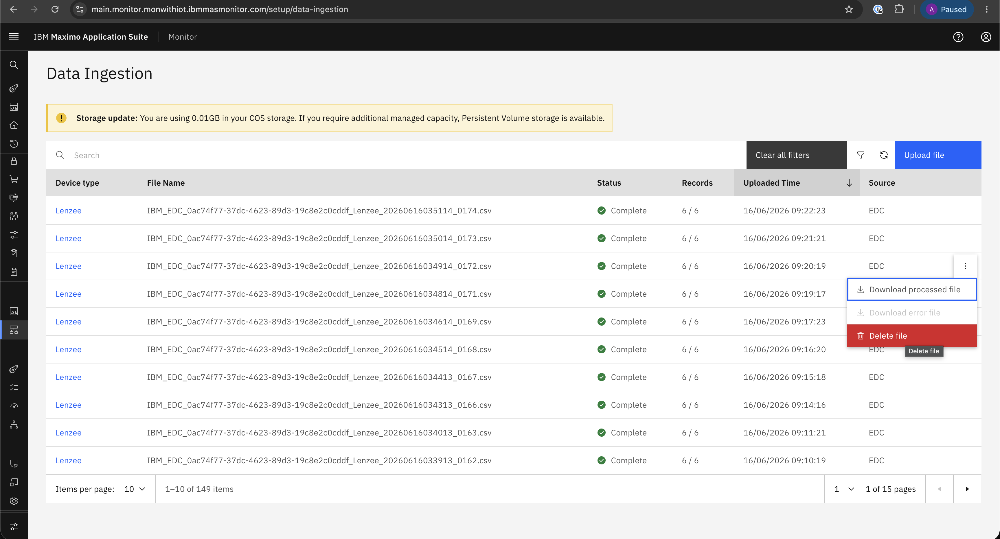
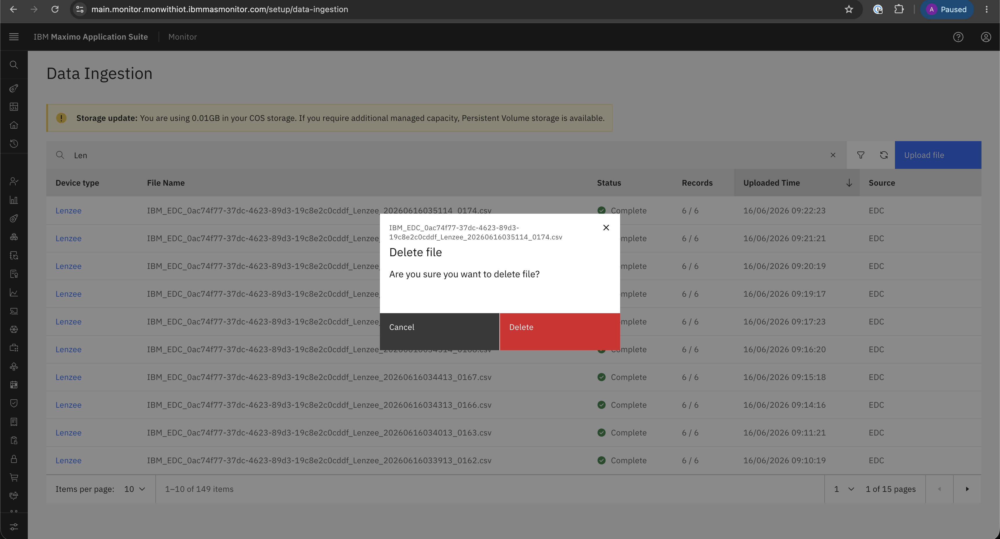

Delete File
Objective
In this exercise, you will learn how to delete a CSV file from Monitor. You will navigate to the data ingestion view, select the file to remove, and confirm the deletion.
Navigate to Data Ingestion
Access the delete file option from either of the following paths:
- Setup → Data Ingestion
- Setup → Device Types → Edit → Data Ingestion
Delete a CSV File
Step 1: Select the File to Delete
Select the CSV file that you want to delete and click Delete File to initiate removal.

Step 2: Confirm File Deletion
Warning
Once the CSV file is deleted, it cannot be retrieved. Ensure that you have a backup before proceeding.
Confirm the deletion by clicking Delete.

Summary
You have learned how to:
- Access the delete file option from the data ingestion workflow
- Select a CSV file for deletion
- Confirm permanent file deletion in Monitor
Congratulations! You have successfully deleted a CSV file.